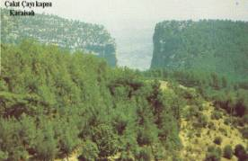
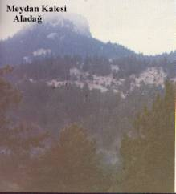

Haberler
Spor
 Galatasaray Başkanı Dursun Özbek'ten sürpriz bir hamle geldi. Kulüpler Birliği'nin başkanlığına soyunan Özbek, kulüpler arası atışmaları doğru bulmadığını ve bu konunun daha uygun şekillerde çözümlenmesi gerektiğini masaya yatırdı.
Galatasaray Başkanı Dursun Özbek'ten sürpriz bir hamle geldi. Kulüpler Birliği'nin başkanlığına soyunan Özbek, kulüpler arası atışmaları doğru bulmadığını ve bu konunun daha uygun şekillerde çözümlenmesi gerektiğini masaya yatırdı.
Gündem
Adana'da PKK/ KCK terör örgütü adına eylem yapıp, güvenlik güçlerine molotof kokteyli atan 5 kişi tutuklandı. Terörle Mücadele Şubesi ekipleri, 9 Ocak'ta merkez Yüreğir İlçesi'nin Anadolu, Dede Korkut ve 19 Mayıs Mahallesi ile ara sokaklarında toplanıp, korsan gösteri düzenleyen PKK/KCK yandaşlarına müdahale etti.
Son Dakika
Sultanahmet Meydanı'nda saat 10.20'de çok şiddetli bir patlama meydana geldi. Olay yerine ambulans, polis ve itfaiye araçları sevk edildi. Bölgede olağanüstü güvenlik önlemleri alındı, tramvay seferleri durdu.
ADANA'NIN COĞRAFİ KONUMU
Adana İli 35-38 enlemleri ile 34- 46 doğu boylamları arasında ve Akdeniz Bölgesi'nde yer almaktadır. Kuzeyinde Kayseri, doğusunda Kahramanmaraş ve Gaziantep, batısında Niğde ve İçel güneydoğusunda Hatay illeri bulunur. Güneyi 160 km.yi bulan Akdeniz kıyılarıyla sınırlanan ilin yüzölçümü, 17.253 km2'dir. Şehir merkezinin denizden yüksekliği 23 m. Olan Adana'nın, Aladağ, Ceyhan, Feke, İmamoğlu, Karaisalı, Karataş, Kozan, Pozantı, Saimbeyli, Seyhan, Tufanbeyli, Yumurtalık, Yüreğir olmak üzere 17 ilçesi 46 Belediyesi, 550 köyü bulunmaktadır.
YER ŞEKİLLERİ
Adana ili, yer şekilleri bakımından dağlık ve ovalık olmak üzere iki bölüme ayrılır.
İlin kuzeybatı, kuzey ve kuzeydoğu bölümleri, Orta Toros adı verilen dağ sistemi ile çevrelenmiştir. Doğuda sınır, Toros sistemine giren Amanoslar'a dayanır. Orta Toroslar üzerinde üç ayrı dağ sırası görülmektedir. Bunlar, batıdan başlayarak Bolkar Dağları, Aladağlar ve Tahtalı Dağları'dır. Ayrıca Orta Toroslar'ın kuzeydoğu uzantısını oluşturan Binboğa Dağları, ilin sınırlarını aşmakta, Kahramanmaraş iline uzanmaktadır. Eski adı Bulgar Dağları olan Bolkar Dağları, batıda Taşeli Platosu, doğuda uzun bir oluk biçiminde uzanan ve jeologların Ecemiş koridoru adını verdikleri derin bir kanyon ile sınırlanır. Batıda tepeciklerle başlayan Bolkar Dağları, kuzeydoğuya doğru gidildikçe yükselerek belirgin bir dağ sırası haline gelir. Yükselti, kütlenin batısında 2500 m. yi geçmediği halde (en yüksek tepeler 2474 m. ile Yüğlük Tepesi ve 2418 m. ile Kümbet Tepe), orta kesimlerde birden 3000 m. yi aşar. (Aydos Dağı 3480 m.) Kuzeydoğuya gidildikçe, 3500 m. yi aşan dağların, en yüksek tepesi olan Medetsiz Tepesi de (3524 m.) bu kesimdedir. Dağların üzerindeki diğer önemli doruklar; Gavur Dağı (3.337 m.), Yıldız Tepe (3.314 m.), Meydan Dağı (3.132 m.) ve Hacıhalil Dağıdır (3.107 m.).
Kuzeydoğu-güneybatı doğrultusunda uzanan Bolkar Dağları'nın uzunluğu yaklaşık 150 km. genişliği ise yer yer 40-50 km. yi bulur ve Ereğli ovası ile Akdeniz kıyıları arasında aşılması güç bir duvar gibi yükselir. Akdeniz kıyıları ile İç Anadolu arasında da ulaşımı engelleyici bir set oluşturan Bolkar Dağları'nın doğudan aşıldığı düzenli bir karayolu yoktur. Başlıca karayolları kütlenin kuzeyinden ve güneyinden geçer. Bunlardan doğuda olanı, kara ve demiryolunun bir ölçüde birbirini izlediği Ecemiş koridoru, bir de Antik Çağ'daki adı 'Pylae Ciliciae' olan Gülek Boğazı'dır. Meydan Kalesi-Aladağ-ADANA'nın Cografi Konumu İldeki dağların en yüksek tepelerinin bulunduğu Aladağlar, kuzeydoğu yönünde yaklaşık 100 km. uzanır. Genişliği ise 40 km. kadardır. Batıda Çakıt Suyu vadisi ile Pozantı ve Kırkpınar Dağları'ndan, Ecemiş Koridoru ile de Bolkar Dağları'ndan ayrılır. Aladağlar, Zamantı Suyu, Eğlence Deresi, Çakıt Suyu ve bunların kolları ile parçalanmıştır. Dağların yamaçlarında gür kaynaklara rastlanır. Batı yamaçları doğu yamaçlarına göre daha diktir. Kuzeye bakan yamaçlarda buzul aşındırmasının izlerine rastlanır. 3.200 m. yükseklikte görülen bu izler, boyları 1 km. yi geçmeyen küçük küçük buzullar halindedir. Genellikle vadileri izleyen bu buzullar, yer yer de küçük çaplı buzul gölleri oluşturur. Bu göller yedi Göller adıyla anılır. Yoğun ormanlar ve çeşitli bitki katlarıyla Aladağlar'ın görkemli bir görüntüsü vardır. Bol sulu akarsuları ve yemyeşil otlar ve ormanlarıyla özellikle yazın Akdeniz'in bunaltıcı sıcağından uzak, yaylalar kuşağı gibidir. Bu dağlar üzerinde yer alan Pozantı, Çamalan, Tekir, Bürücek yaylaları bir plato özelliği gösterirler. Aladağlar üzerindeki başlıca yükseklikler, Demirkazık Tepesi (3.756 m.) Torosan Dağı ve Kaldı Dağı (3.374 m.), Kol Tepesi (3.588 m.) ve Karanfil Dağı (3.059 m.) dir. Bunlardan Demirkazık Tepesi, Toros Dağları'nın da doruğudur.